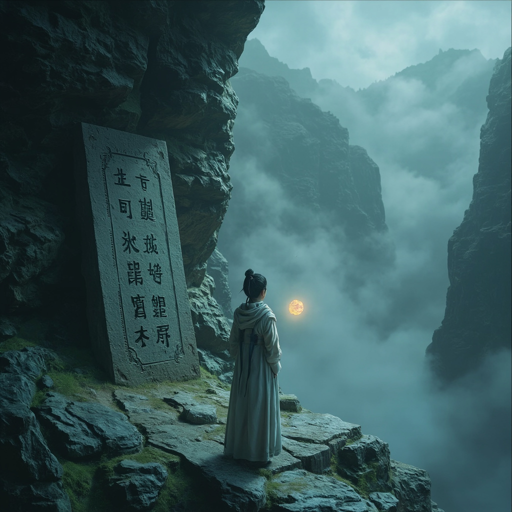
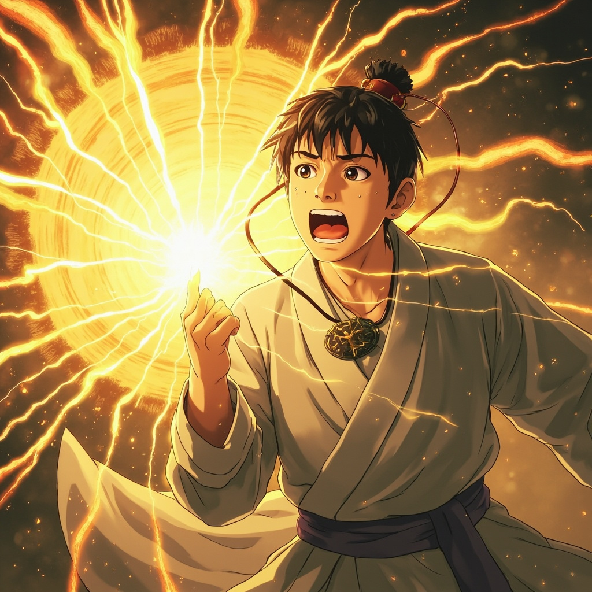
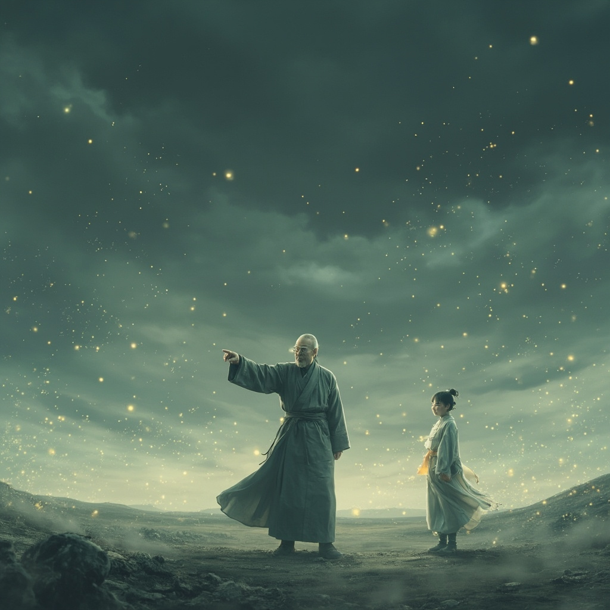

萬古塵埃 · 彩色CG漫畫版
清晨，葉家後山。
葉塵站在荒廢的藥田邊，感受著丹田裡那一點新增的東西——
那不是靈氣，而是比灰塵更細、更輕、更無形的異物。
「這枚玉墜……是你母親的遺物。」
福伯的眼神變得凝重：「她死前說，如果有一天玉墜裂了，就去後山最深處的斷崖邊。」
清晨的霧氣還沒有散去，山林間瀰漫著淡淡的青草氣息。
葉塵走在福伯身後，目光緊緊盯著頸間的玉墜——它比昨天更亮了，暗灰色中隱約透出一絲微弱的金光。

峽谷上方懸掛著一塊古老的石碑：
「塵埃歸源處，萬法始於微。」
葉塵讀完這十二個字，感覺胸口一陣劇烈跳動——玉墜突然發燙，一道刺目的金光從裂縫中迸射而出。

「第九十九次輪迴……終於等到了。」
一個蒼老、沙啞卻威嚴無比的聲音在葉塵腦海中響起。
他的視野開始模糊，金光散去後，出現在他面前的——是一片廣袤無垠的荒原。

「我是誰？我不記得名字了。但我知道一件事——
我曾經是這個世界上最後一個塵埃散修。」
老者指尖輕輕點在葉塵額頭上，一股龐大的信息流瞬間湧入他的大腦。
葉塵緩緩睜開眼睛，感受著體內的變化——
丹田裡的那些灰塵般的異物正在緩慢地旋轉、聚集，形成了一個極其微小的漩渦。
「十六年了。我終於感覺到——自己在變強。」